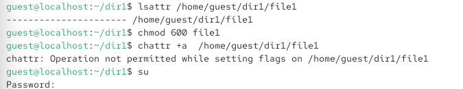
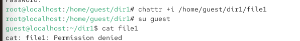

7.октябрь.2026
Дискреционное разграничение прав в Linux. Расширенные атрибуты
Получение практических навыков работы в консоли с расширенными атрибутами файлов.
Действие: От имени пользователя guest определить расширенные атрибуты файла /home/guest/dir1/file1.

Рис. 2 — Атрибут e (extent) — это стандартный атрибут для файловых систем ext4, он не является пользовательским расширенным атрибутом.
Действие: Установить права, разрешающие чтение и запись для владельца.
Рис. 2
Действие: Попробовать установить расширенный атрибут a (append only — только дозапись) от имени пользователя guest.

Рис. 3 — Операция отклонена, так как для установки расширенных атрибутов требуются права суперпользователя (root)
Действие: Повысить права с помощью su и установить атрибут a от имени root.
Рис. 3 — Атрибут успешно установлен (сообщений об ошибке нет).
Действие: От пользователя guest проверить правильность установки атрибута.
Рис. 3 — Атрибут a установлен. Теперь файл можно только дополнять, но нельзя удалять, перезаписывать или переименовывать
Действие: Выполнить дозапись в файл file1 слова «test» и прочитать файл.
Рис. 3 -
Дозапись (>>) успешно выполнена, слово test записано в файл.
Чтение также успешно.
Примечание: В оригинале лабораторной указана команда echo “test” /home/guest/dir1/file1 (без >>), но для дозаписи необходима именно >>. Если использовать > или без перенаправления, запись не произойдёт.
Действие: Попробовать установить права, запрещающие чтение и запись для владельца.
Рис. 4 — changing permissions of ‘file1’: Operation not permitted Пояснение: Атрибут a также запрещает изменение прав доступа к файлу. Команда не выполнена.
Действие: Снять расширенный атрибут a от имени суперпользователя и повторить ранее неудавшиеся операции.

Рис. 5 —
Затем от имени guest:
bash rm /home/guest/dir1/file1 echo “abcd” > /home/guest/dir1/file1 mv /home/guest/dir1/file1 /home/guest/dir1/file2 chmod 000 file1 Результат: После снятия атрибута a все операции успешно выполнены: Файл удалён (или перезаписан). Информация стёрта и заменена на abcd. Файл переименован. Права изменены на 000.
Наблюдение: Атрибут a полностью блокирует удаление, перезапись, переименование и изменение прав, но разрешает дозапись и чтение.
Действие: Повторить все шаги, заменив атрибут a на атрибут i (immutable — неизменяемый).

Рис. 6 — —-i——–e—– /home/guest/dir1/file1
Рис. 8 — ()
| Операция | Атрибут a (append only) | Атрибут i (immutable) |
|---|---|---|
| Чтение | + | + |
| Дозапись (>>) | + | - |
| Перезапись (>) | - | - |
| Удаление | - | - |
| Переименование | - | - |
| Изменение прав (chmod) | - | - |
| Изменение владельца (chown) | - | - |
□ Титульный лист □ Цель работы □ Описание процесса выполнения с командами и снимками экрана □ Наблюдения по атрибутам a и i □ Выводы, согласованные с целью работы
В ходе лабораторной работы я:
Определил расширенные атрибуты файла с помощью lsattr.
Установил права 600 на файл.
Убедился, что для установки расширенных атрибутов требуются права суперпользователя.
Установил атрибут a (append only) и проверил его действие:
Разрешена дозапись и чтение.
Запрещены удаление, перезапись, переименование и изменение прав.
Снял атрибут a и повторил операции — все они успешно выполнились.
Повторил действия с атрибутом i (immutable):
Запрещены все изменения, включая дозапись.
Разрешено только чтение.
Снял атрибут i и убедился, что операции снова доступны.
получены практические навыки работы с расширенными атрибутами файлов в Linux, изучено действие атрибутов a и i на практике.